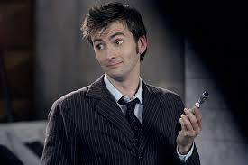

El personaje del Doctor existe desde los años sesenta, y a día de hoy aún no se sabe su nombre (el Doctor es un apodo).
Lo único que se sabe hasta ahora del Doctor es que se trata de un viajero alienígena excéntrico de gran inteligencia que lucha contra la injusticia
mientras explora el tiempo y el espacio en una máquina denominada TARDIS, siglas de Time And Relative Dimension In Space (Tiempo y Dimensión Relativa en el Espacio).
Noveno Doctor
Christopher Eccleston

Decimo Doctor
David Tennant
Undecimo Doctor
Matt Smith
Duodecimo Doctor
Peter Capaldi
Decimotercera Doctora
Jodie Whittaker
Señores del tiempo.
Los Señores del Tiempo y las Damas del Tiempo (a veces llamados Cronarcas) fueron gobernantes oligárquicos del planeta Gallifrey,
y por tanto también de los Gallifreyan.
Los Gallifreyan formaban parte de una de las civilizaciones más antiguas y poderosas del universo. Como los Señores del Tiempo, tenían un poder absoluto del tiempo.
Finalmente, se presumió que la Última Gran Guerra del Tiempo había acabado con la raza, incluso El Doctor lo asumió por un tiempo.
Ciclo de vida
El ciclo del vida de un Gallifreyan parecía tener una fase de desarrollo infantil similar a la humana. Al igual que los niños humanos, sus bebés dormían en cunas. También les cantaban canciones de cuna y cuentos, algunos conocidos como Blancanieves y las siete llaves del juicio final. Había libros especializados para niños.
Los niños Gallifreyan a veces se llamaban "Niños del Tiempo".
Los Gallifreyans tardaban en madurar, uno de noventa años de edad era todavía considerado un niño.
Los Señores del Tiempo tenían un rito llamado Captura del Alma, hecho para los Señores del Tiempo moribundos antes de que fueran asimilados por la Matriz. Esto les permitía asimilar sus recuerdos antes de morir.
Los Señores del Tiempo, una vez alcanzada cierta edad, podían irse de Gallifrey y retirarse a otro planeta. Esto era algo muy raro; Chronotis fue la única persona conocida que aceptó la oferta.
Cultura
Los jóvenes Niños del Tiempo tenían Rovies de mascotas. Cuando eran pequeños, les contaban historias del Shakri para asustarlos y que no hicieran nada que eliminara a la especie. También les contaban cuentos que envolvían a la mítica raza conocida como los Toclafane.
Apreciaban la música, construyendo instrumentos musicales como el Arpa de Rassilon. También les gustaba el arte, aunque la pintura Gallifrey era hecha por ordenador.
Los estudiantes de la Academia organizaban un juego peligroso llamado "El octavo hombre obligado". El juego multidimensional de Perigosto se jugaba con una pelota y un palo o bate. Fue también uno de los favoritos un juego de mesa complicado llamado Sepulchasm.
Durante un momento más oscuro y bárbaro en el pasado del planeta, los Señores del Tiempo se divertían viendo personas desplazadas en el tiempo luchando hasta la muerte en un lugar llamado Zona de la Muerte, pero esta práctica ya no se hacía en los días del Doctor.
Educacion
Una de las principales instituciones de los Señores del Tiempo era la Academia de los Señores del Tiempo. Se dividía en cursos, cada uno de los cuales eran identificados con un color determinado. Las asignaturas de la academia iban desde la Ciencia Cósmica hasta Vehículos Antiguos.
Los niños comenzaban a estudiar, a la edad de 8 años, con una ceremonia especial. Los Gallifreyan se veían obligados a ver la Cisma Desenfrenada, que mostraba el Vórtice Temporal y el poder que los Señores del Tiempo tenían. Eran sometidos a sus horribles efectos, reaccionando de diferentes formas: "Algunos se inspiran, otros huyen y algunos se vuelven locos. Se pasaban siglos estudiando en la Academia.
Los Señores del Tiempo daban una multitud de clases en la Academia de los Señores del Tiempo que incluía matemáticas recreacionales con el estudio de números primos Felices.
Ciencia y Tecnologia
Los Señores del Tiempo eran súmamente avanzados en matemáticas, biología, exobiología, química, física y tecnología.
Su tecnología armamentística y defensiva, sin embargo, iba retrasada a la de otras razas y especies.
La tecnología más característica utilizada por los Señores del Tiempo era la tecnología de los viajes en el tiempo de sus TARDISes. La TARDIS descendía de la primera tecnología Gallifreyan del Escafo Temporal. Las TARDISes eran uno de los pocos tipos de tecnología que se actualizaban, desde la obsoleta Tipo 40 (desde Marca I a Marca IV), pasando por la más avanzada Tipo 57, hasta la humanoide Tipo 102. También existían las TARDISes de Batalla y las TARDISes de Guerra.
Una de las tecnologías más novedosas en la línea temporal del Doctor eran los Anillos del Tiempo . Estos Anillos del Tiempo eran pequeños aparatos que se ponían alrededor de una muñeca para que una persona pudiera viajar en el tiempo sin estar dentro de una máquina del tiempo. También podían hacerse tan pequeños como anillos que se juntaban para viajar en el tiempo.
Aparte de las TARDISes, los Señores del Tiempo tenían poco interés en crear otros medios de transporte. De hecho, rechazaban otros métodos para viajar.
Daleks.
Los Daleks son una raza de mutantes geneticamentes alterados que pertenecen al ADN de tipo 467-989 y provienen del planeta Skaro.
Normalmente estan situados en el interior de armaduras hechas de policarburo. En varias ocasiones, los Daleks reconocieron a un Señor del Tiempo, el Doctorm como su mayor Enemigo.
El Doctor los describió de la misma manera, con su décima encarnación mencionando que un Dalek "no solo es metal, sino que está vivo," y "dentro de la armadura hay una criatura que ha nacido para odiar, cuyo único pensamiento es el de destruir cualquier cosa que no sea un Dalek."
Origen
Los Daleks son unas criaturas provenientes del planeta Skaro. Antiguamente, en Skaro, existían dos razas, los Kaleds y los Thals, siempre en continua lucha unos contra otros.
El uso de su poder nuclear hizo que Skaro fuera prácticamente inhabitable, y rápidamente, los Kaleds empezaron a mutar.
Temiendo el fin de su raza, los Kaleds pusieron todas sus esperanzas en su líder, el malvado científico Davros, que creó unos seres a los que encerró en máquinas que les suministraban todo lo que necesitaban, como pequeños tanques, armados, y a los que eliminó todo sentimiento, a excepción de uno solo: el odio. Y así nacieron los Daleks.
Biologia
A pesar de su aspecto torpe y robótico, los Daleks son seres vivos mutantes descritos como grotescas criaturas ciclópes, cuya horrible mutación está provocada por las guerras de su planeta natal.
Su aspecto exterior (una coraza artificial) es mecánico y parecido al de un salero metálico, midiendo según las medidas de la serie, entre 1,58 y 1,80 m de altura. Su ojo artificial es un visor monofocal y sus extremidades artificiales son un brazo extensible multiusos, de aspecto similar a un desatascador antiguo, y en el lado derecho, su "rayo de la muerte", un dispositivo de aspecto similar a una batidora de huevos, que mata a cualquier ser vivo al que disparen, calcinándolo en una luz láser verde.
Su voz electrónica es su firma, sobre todo cuando pronuncian "repetidamente" su palabra más famosa: "¡EXTERMINATE! (exterminar)".
Anatomia
>
Las criaturas dentro de las corazas son en realidad mutantes Kaled, los cuales fueron descritos por el Séptimo Doctor como "pequeños bultos verdes". Las criaturas dentro de la coraza eran originalmente conocidas como Dals.
El mutante Dalek posee varios tentáculos y un ojo central, o en algunos casos, un ojo derecho grande y uno izquierdo tan pequeño que podría no ser notado. Pese a su aparente falta de movilidad, eran capaces de defenderse, lo cual se demostró cuando un Dalek atacó y mató a un soldado.